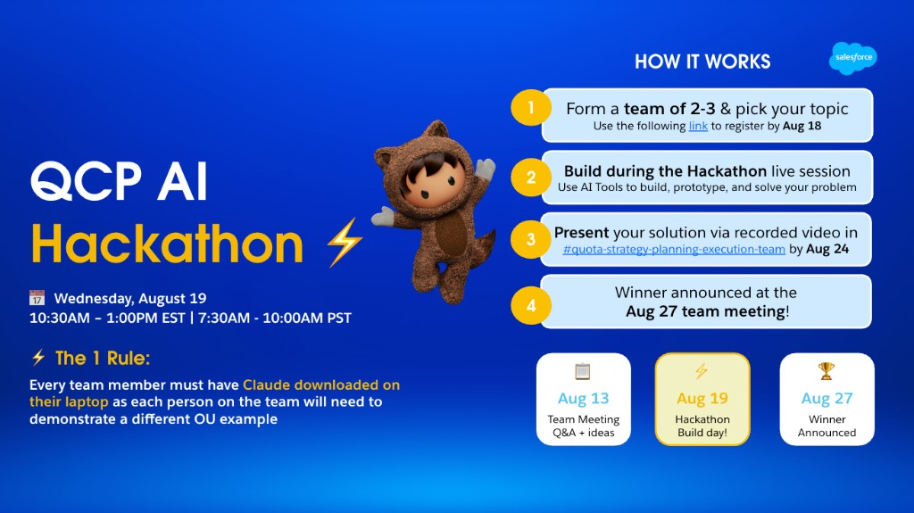

Quota Strategy, Planning & Execution
QCP AI Hackathon
A live build for the Quota team: prototype one AI-assisted workflow you would actually use the next time we set quota, plan capacity, or explain an OU.

The 1 Rule
Every teammate must have Claude on their laptop. Each person on the team will demonstrate a different Operating Unit example of the same idea.
Why we’re here
Brainstorm how AI changes the QCP process — then build a slice of it.
Quota work is high-judgment and highly repeatable: splits, coverage checks, OU narratives, exception hunts, deck drafts. This session is not a slide-about-AI meeting. It is 2.5 hours to pick a real pain point, prototype with Claude, and prove it on more than one OU.
Live session
Agenda
Wednesday, August 19 · times in ET. Keep a second screen for Claude; we’ll lock topics early so the build block stays intact.
-
Kickoff
The 1 Rule, judging, tracks, and what “done” looks like for a 2.5-hour prototype.
-
Team + topic lock
Teams of 2–3. Four-person teams: decide now whether you’ll split into two teams or build a 2-part solution. Write one sentence per part: the process step, the OU you’ll each use, and the artifact you’ll show on the Aug 24 video.
-
Build
Prototype in Claude. Aim for a working workflow, not a polished product. Each person should be generating their own OU example in parallel.
-
Team presentations & next steps
2–3 minutes per team: problem, what you built so far, and the longer-term vision. Unfinished experiments are completely acceptable. We’ll close with submission format, Slack, and the Aug 27 team meeting.
What to build
Challenge tracks
Pick one process, not one tool. The same idea must be demoable by each teammate on a different OU. Use the questions below to name the pain point, then pick a track. Starter prompts are meant to be pasted into Claude and rewritten with your real numbers.
Guiding questions
- What repetitive work could we eliminate?
- Where are we spending time manually analyzing or reconciling information?
- What would make our partners like Sales Strategy and the Sales team experience dramatically better?
- Was there something that would have been too tedious to do before that we can now easily do with AI?
- What problem have we complained about repeatedly but never had time to solve?
Quota setting & allocation
Draft or stress-test splits — OU, segment, role, or quota group — and flag where the math or the story doesn’t hold.
Starter prompt
Using this OU’s quota group grid and Core AE stats, identify groups where median attainment is weak relative to headcount. Propose 3 allocation hypotheses and the data you’d need before changing quota.
Capacity, coverage & ramp
Connect headcount, ramp, and quota so coverage risk shows up before it shows up in attainment.
Starter prompt
Given this OU’s productive headcount, ramp curve, and assigned quota, estimate coverage vs. plan. Call out the 90-day hiring or ramp actions that would close the gap.
Quota effectiveness storytelling
Turn Tableau / QCP extracts into an OU narrative a leader can use: what’s working, who’s below 75%, what to do next.
Starter prompt
Write a one-page FY27 quota-effectiveness brief for this OU. Separate seasonality from true underperformance, and end with 3 questions for the OU lead.
Scenario & what-if planning
Let a planner toggle quota, headcount, or mix and see the implication in language a QCP review can use.
Starter prompt
Run two scenarios for this OU: hold quota flat vs. +8% with no added capacity. Summarize attainment risk, coverage, and the decision you’d take to the planning forum.
Intake, QA & process ops
Shrink the manual middle: request triage, data-quality checks, pivot cleanup, or a repeatable review checklist.
Starter prompt
Design a Claude workflow that takes a messy QCP extract for this OU, flags missing / impossible values, and outputs a clean table plus an exceptions list we’d send back to the data owner.
Wildcard — your QCP pain point
If the real bottleneck isn’t on this list, take it. Same bar: one process, two or three OUs, a demo someone else on the team could rerun next week.
Starter prompt
Here is the QCP step that currently takes us the longest. Rebuild it as a Claude workflow, then rerun it on a second OU without rewriting the instructions from scratch.
From the announcement
How it works
-
1
Form a team of 2–3 & pick your topic
Signups are on the Slack list. If you’re four or more, split into two teams or plan a 2-part solution — four people cannot usefully share one prompt. Still looking for a partner at kickoff? We’ll pair people in the first 15 minutes.
-
2
Build during the live session
August 19 is build day. Use Claude (required) and any other AI tools you already work in. Prototype and solve a real process problem.
-
3
Present via recorded video
Post in
#quota-strategy-planning-execution-teamby August 24. Each teammate shows a different OU example. -
4
Winner announced
At the August 27 team meeting.
Key dates
Timeline
Q&A + ideas
Team meeting to surface problems worth hacking.
Hackathon build day
10:30 AM – 1:00 PM ET live session.
Video due
Recorded demo posted in the team Slack channel.
Winner announced
At the team meeting.
Guardrails
Rules
- Team size is 2–3. Solo entries only if we can’t pair you at kickoff. Four or more: either split into two teams, or build a 2-part solution (two related workflows, each owned by ~2 people). Four people on the same prompt will step on each other.
- Claude is required on every laptop. Other AI tools are fine as a supplement, not a substitute for the OU demos.
- One idea, multiple OUs. Same workflow; each person runs it on a different Operating Unit (or a clearly different selling motion if an OU isn’t available).
- Stay in QCP. The prototype should help quota setting, capacity planning, effectiveness reviews, or the ops around them — not a generic chatbot.
- No production credentials in the video. Use export files, screenshots, or dummy values if the live system isn’t shareable.
- Unfinished experiments are completely acceptable. Show what you’ve created so far and the longer-term vision. That is useful to share with the team — someone else may pick it up and keep going. A rerunnable start beats a beautiful mock that nobody can repeat.
Already registered
Teams
Pulled from the hackathon signup list. Ideal size is 2–3. If you’re four or more, don’t try to share one prompt — either split into two teams or ship a 2-part solution (two related workflows, each owned by a pair).
Ops, we did it again
Celeste Molero, Tiffany Ho
Topic TBD
4 people · split or 2-part
Prompt Force One
Divya Gupta, Apoorva Mandadi, Pablo Gonzalez, James O'Brien
Manager quota relief due to employee on LOA
4 people · split or 2-part
Quota Without Borders
Jiayi Hou, Fong Teng Loh, David Courion, Josh Gurman
Topic TBD
Closed Won
Tina Kim, Alex Birge, Angela Lopez Santafe
Topic TBD
Intern Force
Mateo Flores, Rene Capin
Socks
Powerpuff QBPs
Tony Liu, Daniel Xie, Allison Bruner
Re-orgs
How we pick a winner
Judging criteria
Scored on the recorded video. Unfinished work is fine. A messy prototype plus a clear vision that a planner (or another teammate) could continue beats a flashy demo of a process we don’t run.
Process impact
Does this save time, reduce rework, or improve a decision we already make in QCP?
OU portability
Did each teammate show a different OU? Would a third OU work without starting over?
AI leverage
Is Claude doing real work (structure, judgment, drafts) — not just formatting a spreadsheet?
Clarity of the demo
Problem → workflow → OU examples → what we’d do next. Easy to follow in a few minutes.
By August 24
Submission
Every person on the team must talk in the presentation and share their screen, demonstrating the solution on a different OU or selling role. That is how we know more than one person can actually run what you built. Unfinished experiments are completely acceptable — show what you’ve created so far and the longer-term vision so the rest of the team can learn from it or work off it. Easiest recording path: start a Google Meet, record the session there, then upload that video to #quota-strategy-planning-execution-team. You can keep building after today — the clock for the entry is Monday, August 24. Aim for 3–5 minutes.
- Team name and who was on it
- Track + one-sentence problem
- Walkthrough of the Claude workflow as it exists today — unfinished is fine
- Each teammate talks and screen-shares, each on a different OU or selling role
- Longer-term vision: what you’d build next, and how someone else could continue it
Bring to the session
Resources
Claude
Required. Install and sign in before 10:30. You’ll run your OU example yourself — don’t share one laptop.
A real QCP artifact
Quota group grid, attainment extract, coverage sheet, or last cycle’s planning notes for the OUs you’ll demo.
Your existing stack
Tableau, Sheets, Slack, Cursor — use what you already open during planning. The hack is the workflow, not a new system of record.
This page
Tracks, starter prompts, agenda, and the submission checklist. Pin it next to Claude during the build.
Quick answers
FAQ
What counts as a different OU example?
Same workflow, different Operating Unit — e.g. one person runs AMER Enterprise, another EMEA, another a specialist-heavy OU. If two people only have access to one OU, split by selling motion (Core AE vs. a specialist quota group) and say so in the video.
Do we have to finish during the 2.5 hours?
No. August 19 is the concentrated build. You can keep iterating through August 24. The live session is for locking the problem and getting a first working pass.
Can we use ChatGPT, Cursor, or Tableau Pulse too?
Yes, as extras. Every teammate still has to show their OU example in Claude, because that’s the shared bar for judging.
Does it have to be finished or production-ready?
No. Unfinished experiments are completely acceptable. Demonstrate what you’ve created so far and the longer-term vision. Sharing a partial workflow is helpful — others on the team may work off it. Judging rewards impact and portability, not polish.
Our team has four people. Is that OK?
Not as one prompt. Either split into two teams of two (each presents 2–3 minutes), or stay together and ship a 2-part solution — two related pieces of the same problem, each pair owning one part. Prompt Force One and Quota Without Borders should decide this at topic lock.
I don’t have a team yet.
Come to kickoff. We’ll pair remaining people in the first 15 minutes. Ideal size is 2–3 so the OU rule is easy to hit.
What should the video look like?
3–5 minutes. Start a Google Meet, record there, and upload the file to Slack. Every teammate must talk and share their screen, each demonstrating the same solution on a different OU or selling role. Show what exists today — even if it’s unfinished — plus the longer-term vision so others can work off it. No produced edit needed.